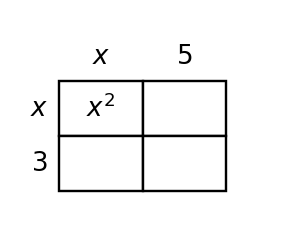

Algebra 1 · Unit 4 · Section 4.4 · Investigation
Polynomial Area and Structure Lab
Polynomial Operations
Learning Target: Students will add, subtract, and multiply polynomial expressions.
Directions
- Work with a partner unless your teacher assigns a different grouping.
- Show the evidence you use, not only the final answer.
- When a representation changes, keep the meaning of the quantities attached to your work.
- Revise an answer if later evidence shows that your first claim was incomplete.
Part 1 · Area Model Product
Use the area model to expand $(x+3)(x+5)$. Label every partial product before combining.

Part 2 · Add and Subtract Polynomials
Simplify and explain which terms can combine.
$$(4x^2-3x+7)+(2x^2+5x-4)$$
$$(6x^2+x-9)-(2x^2-4x+3)$$
Part 3 · Structure Prediction
Before expanding $(2x-1)(x+4)$, predict the degree, leading term, and constant term. Then expand to check.
Synthesis
Why does an area model prevent the “first and last only” multiplication error?